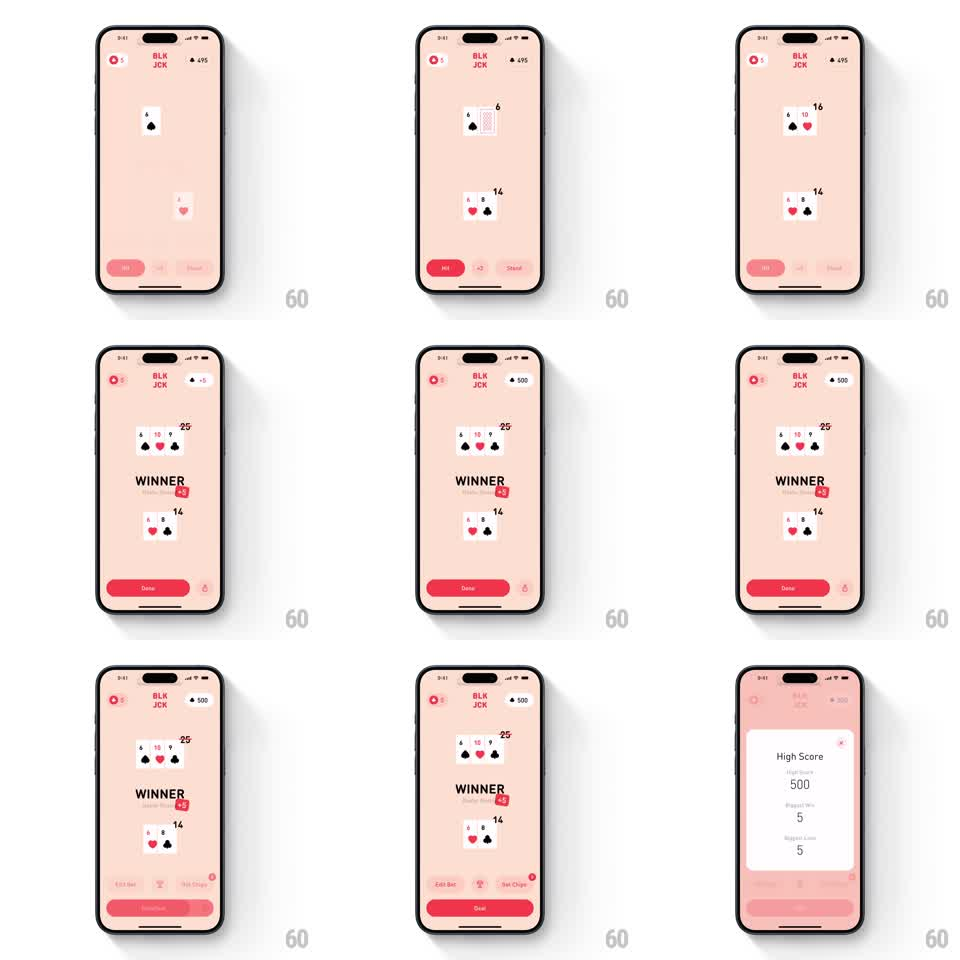

Media
Frame-by-frame

Rebuild this animation 1:1: BLKJCK's win sequence - cards reveal, "WINNER" rises with a floating score badge, and a high-score modal springs in over the table.

Rebuild this animation 1:1: BLKJCK's win sequence - cards reveal, "WINNER" rises with a floating score badge, and a high-score modal springs in over the table. ## Integration Integration: stack-agnostic spec - springs given as stiffness/damping, timed motions as duration + curve; map every value to your framework and animation library of choice. ## Scene Pink blackjack table in its settled state: revealed dealer hand with total, player hand with total, "WINNER" verdict with a "+N" chip badge, Done button, then a High Score modal card. ## Motion spec Pattern: win reveal with score modal, ~2s. - The dealer's hole card flips face-up (300ms) and both totals tick to their final values (~400ms, ease-out). - "WINNER" rises from below and fades in (350ms, 24px rise, ease-out) as a small "+N" badge pops beside it (scale 0.5 to 1, spring stiffness 380 damping 14). - The header balance rolls up by the winnings on the same beat. - After ~800ms the High Score modal springs up from the bottom (spring stiffness 260 damping 18), the table dimming behind it (250ms), its stats (best round, biggest win, biggest loss) fading in with 80ms stagger. - Dismissing the modal drops it back down (250ms, ease-in) and undims the table. ## Calibration - The verdict, badge, and balance roll are one simultaneous beat - sequencing them reads as three separate events. - The modal's spring has a soft overshoot; a plain sheet slide reads as system chrome. ## Reduced motion Verdict fades in; modal fades in without spring. ## Don't miss - The "+N" badge is the exact chips won - it is a counter, not decoration. - The table stays fully readable behind the dim; the modal informs, it does not erase the win.